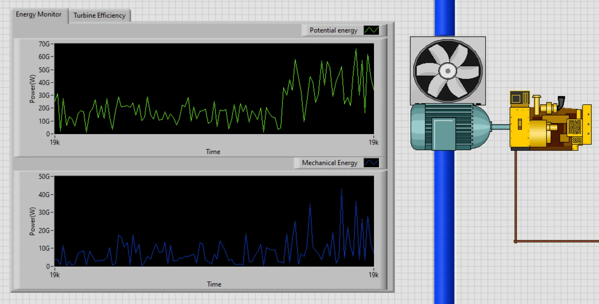
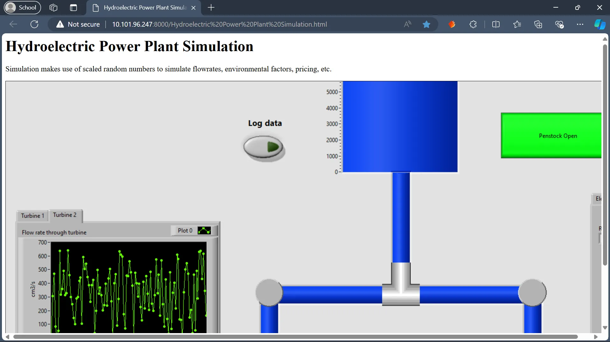
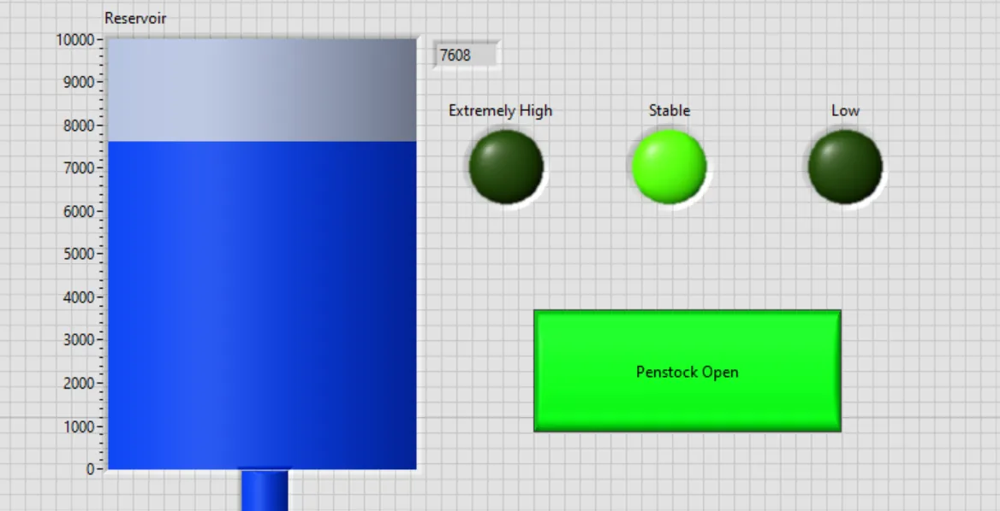
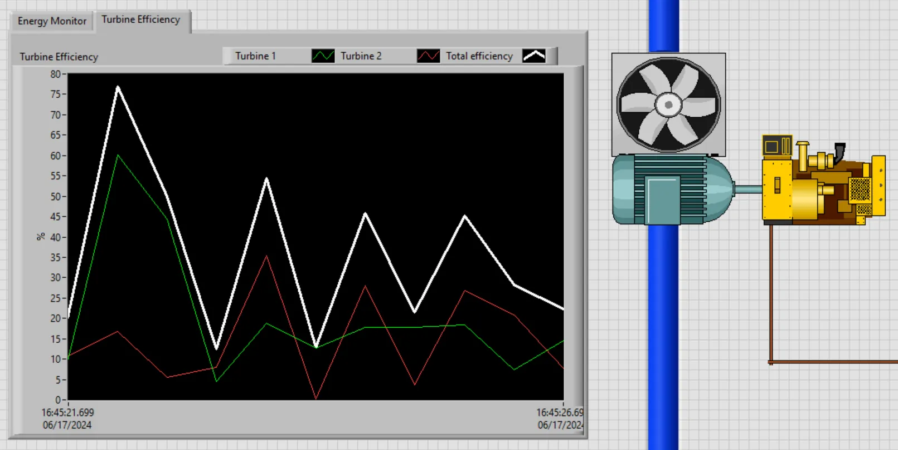
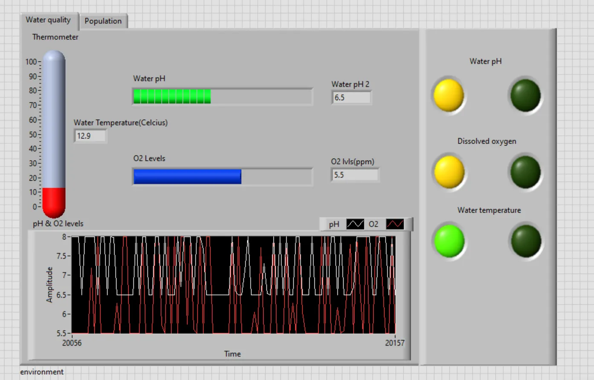
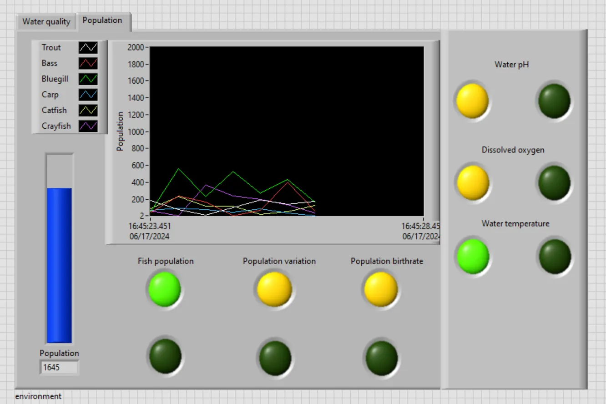
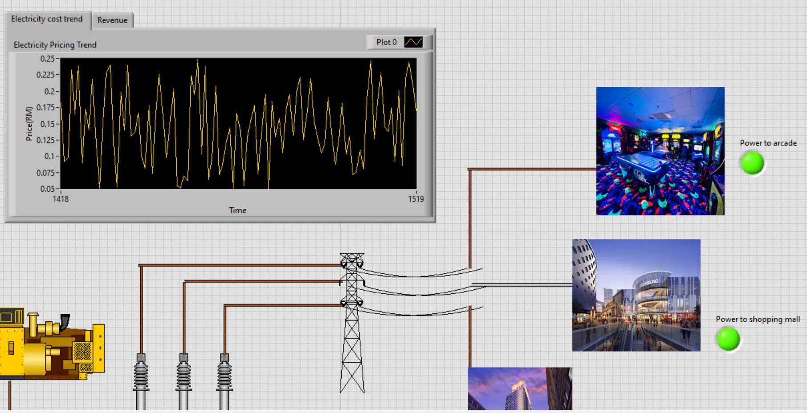
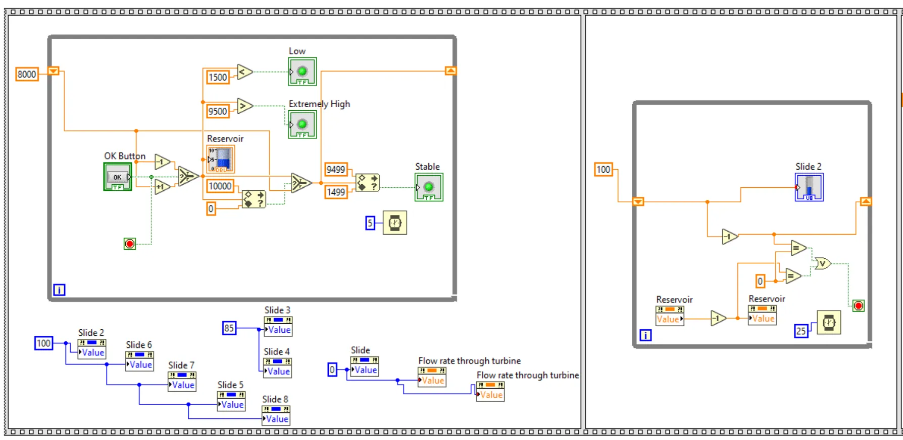
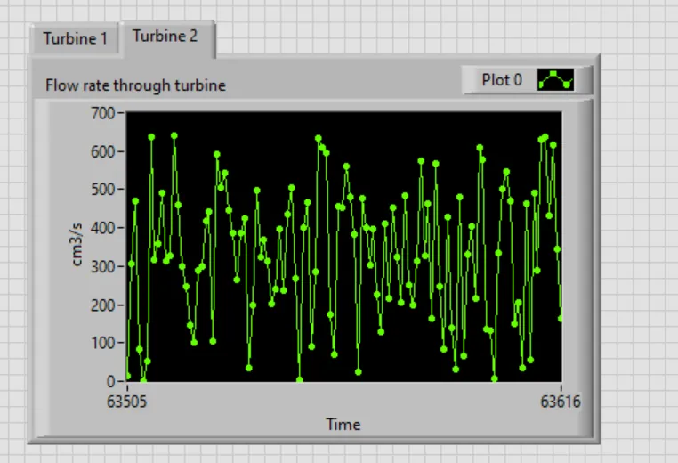

← Archive
Hydroelectric Plant Simulation
A live LabVIEW model of a hydro plant: water flow, turbine efficiency, environmental impact and revenue, with event logging and a remote web panel.

Overview
The simulation monitors three areas: water flow (reservoir level, penstock and per-turbine flow), energy conversion (turbine efficiency against the water's potential energy) and environmental impact (pH, temperature, dissolved oxygen and fish population).
Random variation keeps the model realistic. Events are logged to Excel for headquarters, and LabVIEW's web publishing tool provides a remote monitoring page.
What I did
- 01Built the reservoir, penstock and twin-turbine front panels and block diagrams.
- 02Built the efficiency, energy and revenue calculations with live electricity pricing.
- 03Built water-quality and fish-population monitoring.
- 04Added event reports with Get Dynamic Data Attributes and Write to Measurement File, and a web-published panel.
Signal path
- Reservoir
- Penstock
- Turbines 1 & 2
- Efficiency & energy
- Grid & revenue
- Event log & web
Gallery · 8 images
A closer look







